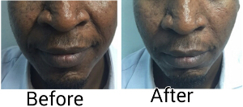

Schedule: Monday - Saturday - 8:00 - 18:00, Sunday - 8:00 - 14:00
0812-020-8868 , 0810-263-4743
Botox injections are the best known of a group of medications that use various forms of botulinum toxin to temporarily paralyze muscle activity. Botulinum toxin is a neurotoxin used to make Botox. They’re 7 types of Botulinium toxin, which are: botulinium toxin A, B, C, D, E, F, G. Botulinium toxin A and C are the recommended and widely used Botox.
Botox is used medically to treat certain muscular conditions and cosmetically to remove wrinkles by temporarily paralyzing the involved muscles. Botox injections are also used to treat such problems as muscle contractures, repetitive neck spasms (cervical dystonia), excessive sweating (hyperhidrosis), overactive bladder and some causes of crossed eyes. Botox injections may also help prevent chronic migraines in some people.
Botox works by blocking the nerves that cause contraction of the muscles and subsequently softening the appearance of wrinkles. The most common use of these injections is to temporarily relax the facial muscles that underlie and cause wrinkles, such as:
Derma fillers, also known as “injectables” or “soft-tissue fillers,” do just what their name suggests: they fill in the area under the skin. The Derma fillers are injected into the skin to fill in facial wrinkles to restore a smoother appearance. Unlike Botox injections that relax the muscle under a wrinkle, dermal fillers fill the line, crease, or the area. Injectable fillers can give you a more youthful look for a fraction of what a traditional facelift costs. Some fillers are natural and some are synthetic, but they all work to improve the appearance of aging skin in the following ways:
Derma fillers can also be used as “volumizers,” plumping and lifting cheeks, jawlines, and temples; filling out thin lips, and plumping sagging hands. Most of these fillers are temporary because they are eventually absorbed by the body. Most derma fillers will fill lines and wrinkles in less than 30 minutes with results that can last from 4 months to more than a year. Some people may need more than one injection to achieve the wrinkle-smoothing effect. The effect lasts for about six months or longer. Successful results depend on health of the skin, skill of the doctor and type of filler used.

PRP is a natural product created from your own body. A small amount of blood is drawn from you and placed in a sterile tube that is spun down in a centrifuge to separate the different components of the blood. Red and white blood cells are divided from the platelets and the plasma (the clear fluid). This plasma now contains a higher than normal number of platelets and is called platelet rich plasma (PRP). Platelets are the cells in the blood that help tissue to heal and grow new cells.
The PRP, injected into specific areas of the skin, act as a matrix that promotes your own collagen to grow, regenerates tissue, and thus acts as to naturally smooth and tighten the skin. Also it is used for volumizing faces that are beginning to look drawn, to plump out cheek indentations, soften under eye hollows, improve the skin tone, tightness, and texture, and fill in areas where hyaluronic acid fillers cannot reach or are not safe to use.
In addition, PRP can also be successfully used to treat thinning hair and hair loss particularly male pattern baldness. It is important to start treatment early on and whether you are a suitable candidate will be determined during your consultation. Results begin to show 3-4 weeks after the treatment session and continue to improve with time. Three treatment sessions are generally recommended, spaced 1-2 months apart, to achieve the best outcome.
Depending on how many areas you want to get treated, a volume of blood will be taken. This is usually 20 ml. Your blood is then spin in a centrifuge for around 15 minutes. Once your cells have separated, the rich platelets are extracted and injected into the skin where rejuvenation or other indications are requested.
It has come to my notice that a lot of people don’t really know where,who and how to get wound care. Therefore, I have decided to write a little on wound care for the public to understand.
Over the years many have defined wound as either break in the epithelial lining of the surface of an organ or tissue while some fill wound is simple an ulcer. In standard practise wound is defined as a break in the structural integrity of a tissue or an organ. Wound can be interchange with an ulcer but not all wound are ulcer. In wound it is damage in structural integrity of the tissue while in ulcer it is break in the lining of the tissue or organ e g a closed contusion injury of the skin might not have an obvious injury but the integrity of the tissue has been compromised because of injury which could be because of trauma or burn.
This can also be look in the direction of injury to organs like kidney or liver where there could be closed injury to those organs without an outside manifestation of problem. Wound can be applied to involve many organs in the body but for a lot of people,wound is seen only affecting the skin.This can be well explained in injury involving the skin like in thermal injury where one can have thermal injury (fire/hot water)of 4th degree (American Burn wound classification) with involvement of the underlying structures of the skin like the nerve or blood vessels. Wound or ulcer may appear simply as an abrasion, laceration, bruises, burn wound, open wound, closed wound, contusion, concoction, maceration and so on.
Many methods have been used to classify wound but can simply be classified as:
Before treatments are done it is better to consult a Physician or doctor about your wound especially a Plastic Surgeon in this part of the world – Nigeria. In the western society their are wound specialist but in Nigeria the wound specialist are the Plastic Surgeons. More of their works vary around wound however they do more than that on their daily basis, irony you said because a lot of people believe that Plastic Surgeons do more of beauty of the nose and breast etc.
Apart from the home or minor wound or injury which can be cared for by use of small home kit and dressing. Any suspicious wound should not be kept away from the Doctor. Simple things like running clean water over a wound are good. Applying pressure where there is bleeding. Apply clean clothing over it before rushing to the clinic to see the doctor. Taking the involved person away from the place of injury is excellent. Splitting or resting of the involved part will minimize further injury and relieve pain of the area involved. However wound care should be given majorly to the plastic Surgeon to care for on a daily basis. I will emphasis here except where not available. You can look for the Plastic Surgeon in your environment by googling NAPRAS (National Association of Plastic Reconstructive Aesthetic Surgeon website), you will find on the site some registered member of the association who you can consult for wound care.
What we often find are people who visit pharmacy or chemist and they are prescribed antibiotics without proper investigations. This could lead to micro bacteria resistant which could make antibiotics treatment difficult for the same person because of abuse of antibiotics. Pain reliever may also be necessary in some cases to reduce inflammation. Admission may also be important, in certain situation surgical intervention. Use of skin grafting, flap, and excision of the wound (surgically removing the wound) may be necessary.
Things like debridement which is removal of dead part of the skin involve might be necessary Anti tetanus administration Splinting of the area involve Antibiotics if the wound is infected but this should be left to the discretion of the doctor to decide either because of the likely organism involve or after wound swab has been done to find out the organism involve.
What we often find are people who visit pharmacy or chemist and they are prescribed antibiotics without proper investigations. This could lead to micro bacteria resistant which could make antibiotics treatment difficult for the same person in other infection difficult because of abuse of antibiotics. Pain reliever may also be necessary in some cases to reduce inflammation. Admission may also be important in certain situation surgical intervention. Use of skin grafting, flap, excision of the wound (surgically removing the wound) may be necessary
Except if not necessary it is important to visit your physician after wound care has been done and be sure you are properly discharge
We all possess pigments in our skin except the Skin type 1(Fitzpatricks classification) who has no pigment in their skin. The skin being the largest organ of the body has melanin producing cells called melanocytes. The melanin can be produced in large amount in some cases which could be intrinsic e.g. birthmark or extrinsic. One of the major reasons why people visit our clinic is because of post acne scar or due to post steroidal rebound hyper-pigmentation(skin bleaching) and as a result of none protection of the skin from the effect of the sun called solar keratosis.
These pigments in our skin can be modulated to increase or decrease by either the sun which causes an increase or control by the use of sunscreen with a minimum of 30(Sun protection factor spf 30). The pigment in our skin can also be reduce by use of products that has hydroquinone, kojic acid, MSH, glutathione, Vitamin C, tranexamic acid to mention a few. The use of hydroquinone, hydrocortisone, and some products containing steroid are frown at and even banned in some countries because it does more harm than good because it reduce the dermal layer of the skin resulting in stretch marks formation. It also results in depression of the immune system after a prolong use. With injury wound even become more difficult to heal.
There is also rebound darkening of the area involve immediately the products are stopped. For a lighter, healthier look, these pigments are best removed using either a long pulse laser which act by eliminating and reducing the pigment producing cells. Certain products can also reduce the hyperpigmentation by binding to one of the enzymes in the pathway of synthesis of melanin and in this way reduce the amount of melanin production. Though it might take a little longer time it will be well balance after use of the product with no adverse effect.
It is also necessary that when the skin tone is restored it should be protected by the use of sunscreen. Different approaches are available at Grandville in dealing with issues like this which include chemical peeling, laser treatment, dermabrasion and use of products that block the enzymes producing the melanin.
The skin especially the face, the shoulder, the arm, the chest and some part of the back has a lot of sebaceous glands. This sebaceous gland is connected to the skin surface through the skin pore. Skin debris from outside the skin in form of dirt can clog these pores and with replication of specific bacteria in the gland can lead to acne formation. Even though acne formation is also linked with hormonal imbalance, we observe that if the above are well managed acne can be control properly.
Many after acne formation ends up with multiple spots on the involved part of the body especially the face (post acne scar/hyperpigmentation). All these after effect of acne can be treated using multiple modalities. Chemical peeling is one of the many methods we have adopted in our clinic and over the years we have observed the best of peels that works and are comfortable with the pigment skin. The peel will help in removing multiple layers of the epidermis (outer part of the skin) and some layers of the Dermis (2nd layer of the skin) without causing any scar on the client. In addition, with our use of best pharmacological products to stop the bacteria proliferation (Vitamin A propionate/Acne solution) and reduce the amount of sebaceous gland produce. Use of exfoliator e.g. Derma polish to reduce the debris from the face or any other region can help to eliminate or reduce the incidence of acne. Sometimes post acne depressed scars can also be modified by resurfacing or by the use of derma fillers.
The dermis represents 95% of the total skin volume and it is the main structural frame work of the skin. It also has a very vital structure called the collagen which is responsible for the strength of the skin. In stretch marks there is a break in the structural integrity of the skin as a result of reduce thickness of the skin or sudden increase in the amount of subcutaneous fat with resultant break in the dermal (inner) layer of the skin. Focus of treatment in stretch mark treatment will be to restore the structural integrity of the skin by increasing the thickness of the skin and stimulating collagen formation. This could be achieved by doing the following as a single procedure or as multiple procedures.
Microneedling – This cause micro-injury to the dermis with resultant production of collagen. It could be in form of Professional (Medical) microneedle when the needle is longer and home use when the needle is shorter.
Dermabrasion – This is a mechanical controlled surface layer damage to stimulate new cell formation which result in more layer and new skin layer production. Chemical peeling- This is also a chemical controlled skin cell destruction to stimulate new and thicker skin layer. Laser – This can be used to produce fibroblast which are cell responsible for collagen formation. It could also be used to cause micro-injury in the dermis with resultant more collagen formation. What we do at Grandville Medical & Laser is regeneration of the skin and reduction of the underlying fats as a main method of treatment.
We ensure a smoother and firmer skin at Grandville Medical & Laser through the use of radio-frequency devices. This is a medical device that helps in dermal restructuring and body fat reduction consequently giving you a firmer and smoother skin. It may be done in addition to other skin care procedures.
As one age, there are changes that are noticed in some body parts of the body e.g. the face with prominence nasolabial fold, crow feet, increase dynamic wrinkles, static wrinkles and so on. We also help in reducing or eliminating facial and general wrinkles through the use of laser resurfacing, by the use of Chemical peels, alternative botox, Botox and Dermafilling. In our clinic, we combine these processes together to achieve a sustainable result. Other options available include the use of radio-frequency device.
For those who regularly resort to methods like electrolysis, waxing, plucking, shaving and use of epilation cream for hair removal, Grandville has a permanent method that assures your freedom from hair growing in uncomfortable places. Our laser light (long pulse ND:YAG) works by attracting specific substance or structure on the skin.
The laser light is being converted to heat with subsequent destruction of the hair follicl. Melanin is one of the structures the laser light is attracted to with subsequent destruction of the melanin pigments in the hair root. Because hair grows in cycle there is need for more than one treatment more often, about 6-8 sessions are required before there is permanent reduction of the hair growing in the involved area of the body.
However, after the third treatment there is always a significant drop in the amount of hair growing in the addressed region of the body. Other benefits will include simultaneous removal of associated black pigments in the involved area of the body. At Grandville Medical & Laser we use the ND:YAG laser machine because it is the machine recommended for permanent hair removal.
We offer the use of low level laser in the treatment of arthritic pain. This is an advanced method with many benefits to those who suffer from arthritic pains.
Our low level laser has been found to be very good in place of analgesic for low back pain. It is however not a substitute for proper evaluation if there are other factors involve.
Laser is still the best method for tattoo removal. At Grandville Medical & Laser, we use the Q switch ND:YAG laser machine for tattoo removal. Initial evaluation and consultation is done at the clinic during the first visit. Client is educated on the different processes involved in tattoo removal which are usually in sessions of 2-3 treatment.
Layers of the skin (epidermis/dermis) involved in the tattoo are removed and time interval for healing is allowed before the next treatment is done. If all conditions after treatment of tattoo are followed rarely will it result into scar formation.
While fat in good position in moderate quantity and quality can be of amusement to the opposite sex and help in the esteem of the lady. Excess amount in same place can be a nuisance and disfiguring to the lady. This same principle also applies in male figures who flaunt their six packs and when excess fat add to such area could be of concern to the man. Body contouring could be done either as a non-surgical and surgical method.
In non-surgical methods devices like Radiofrequency, high frequency ultrasound can be used to reduce the fat in the body and also to firm the skin. The mechanism behind the radiofrequency and high frequency ultrasound is the frequency that causes displacement of the fat in the involve area with subsequent excretion and metabolism of the fat involve. In firming, the frequency causes micro-frequency injury to the dermis with subsequent stimulation of collagen and thereafter firmness of the skin.
The non-surgical processes involve gradual reduction in session of treatment to reduce the body fat and firm the skin simultaneously. Many sessions could be required to achieve the result desired by the client. Surgical methods e.g tummy tuckling, liposuction, face-lifting which some consider not safe however give better and faster result.
In tummy tucking the surgeon design the amount of fat and skin to be excised(removed) from the lower abdomen and in addition to this there is a repair of the abdominal muscle called rectus abdominis(through the rectus fascia) which in a lot of women after delivery would have been wide apart. This tightening in addition to the fat/skin (adipocutaneous layer) that has been removed will give a firmer and fitted abdomen. The belly buttons will also be recreated during the surgery to give a good aesthetic look. All these services can be access at our center
The colored skin has been noticed to age gracefully because of its high melanin content. Melanin is the pigment responsible for protecting us from the ageing effect of the sun. Asides the sun, other factors responsible for skin aging include individual genetic constitution, disease and nutrition etc. Over the years many methods have been observed to slow down aging.
These include the use of organic natural products like Argan oil, omega oil to facial chemical peeling, laser skin peeling or resurfacing, low level laser and radio-frequency. Of interest is the use of Botox injection to ablate fine lines and wrinkles on the face, dermal filling to reduce large aging signs on the face and hand. Sometimes some of these procedures are combined together to give a synergistic result, all which are available at Grandville Medical & Laser.
Scars can be very disfiguring especially when they are on obvious areas of the body. Scars which lie across natural skin tension line will be obvious even at distance to observers looking afar. In addition, there are scars which will limit the function of some parts of the body e.g. ectropion which could result from scar involving the lower part of the face leading to increase width opening of the eyes and increasing the likely tendency to injury to the eyes.
Scar in the hand could also lead to what is called contracture with subsequent functional limitation of the hand either in holding objects or in opening and closing the hand. In scar revision, the plastic surgeon rearranges the scar to fall long the natural skin tension line to make it oblivious to an observer.
At Grandville Medical & Laser, we offer great scar revision techniques which will make those scars appear less obvious compared to their natural original appearances. We have attended to many scars on the body including facial tribal marks which are usually of concern to many. Although responses differ but we can assure you that the best will be offered to you.
Keloidal scars are scars that develop from small areas of injuries e.g. pimples, minor injuries with subsequent overgrowth of the scar beyond the margin of the wound itself. The scar results from continuous production of collagen at the injury site and often times are seen in Blacks above 20 years. Very few times do you see this lesion develop in young people however it can occur.
There are usually family history of similar lesion in first degree relatives and they tend to occur more on the upper parts of the body of the body e.g the chest, the ear lobe, the shoulder. They can also affect any part of the body like the leg, the private part, the breast and so on. There are many methods that have been found to be useful in the treatment of keloid and no one single method has been found to be the best.
In addition, there is still no cure for keloid. However, there are ongoing research which has yielded better result in the treatment of keloidal lesion. The options available for treatment include intra and extra lesion use of cryotherapy which is the use of cold nitrogen in destruction of keloid. The intralesional cryotherapy has yielded better result but is still in the research stage and more centers are looking into this method.
The other modalities available are use of intralesional triamcinolone injection, surgical excision, Laser, radiotherapy and sometimes the combination of some of the methods above. Multiple modalities are employed in the treatment of keloid in our clinic and our results have been fantastic. The surgical debulking to steroid injection and the application of silicon sheet or gel after surgery or adjunct to any of the above method. Acquired Hand Disease e.g. ganglion, tendon injury. This we see in a lot of people. It is the commonest hand tumor .It is formed by synovial fluid within the capsular membrane around the tendon sheath.
During movement of the fingers there is movement of the swelling. Sometimes, some have attempted draining but with the capsular sheath intact it can lead to recurrence. It can sometimes disappear and reappear again. If it is not properly attended to, it can lead to recurrence. It can be found in both the anterior (front) and posterior (back) aspect of the hand but more commonly the posterior.
At Grandville, we have seen people come with unsightly scars from wrongly done surgical procedures with respect to these cases – we offer a safe and top quality surgical procedure to remove the tumor with minimal scar.
While most people are born with normal hands, certain percentage of people could be born with one anomaly of the hand or foot. These anomaly could be in form of fused fingers called syndactyly, multiple fingers called polydactyly, small fingers called macrodactyly ,curved or bend fingers called camptodactyly and with other congenital syndromes which are associated with error in either the feet or hand formation.
All these anomalies or malformation can be corrected at appropriate age when the children are brought in to the clinic. This could appear as fuse hands, multiple hands, missing digits etc. We specialize in reconstructive surgery for people who are affected by such.
This we see in a lot of people. It is the commonest growth in the hand. If not properly attended to, it can lead to recurrence. It can be found in both the anterior and posterior aspect of the hand but more commonly the posterior.
At Grandville, we have seen people come with unsightly scars from wrongly done surgical procedures with respect to these cases – we offer a safe and top quality surgical procedure to help your skin back to the way it was meant to be.
This is one of the commonest childhood anomalies. The body during the process of face forming in utero may end up with structural failure appearing as deformities. Children or adult born with this deformity are not nuisance to the society and are normal children and they are as intelligent as any other children born without a defect.
With our smile train we offer free surgery to both children and adult born with the defect involving the lip and the palate. We offer world class reconstructive surgery of this defect.
The ear is one of the vital organs of human body,deformities to the ear can cause malfunction in earing and disfigure the face. This could be either congenital (when the child is born with problem with the ear) or acquired from a bite or injury which causes loss of a part of the ear.
Our world class reconstructive surgical procedure and use of prosthetic helps in a near flawless reconstruction of the affected area.
The breast is a modified sweat gland. Its function in aesthetic, sex and feeding cannot be overemphasized. It is also one of the organ that can be diseased in both man and woman. Sometimes, parts of the breast develop growth which can be significant and alerting (Cancer) and non-alerting (fibroadenoma).
It can also be diseased with many other things starting from the skin (keloid) to the breast gland itself(fibroadenoma, abscesses, haematoma). It is imperative that when there is a disease affecting the breast such as breast lump/swelling or even abnormal discharge of the breast the breast Surgeon should be seen and the disease addressed as soon as possible. In addition, proper evaluation of the breast should be done which include the use of ultrasound and mammography where necessary.
For women above 40 years any swelling in the breast should be referred to Grandville. This is one of the numerous services we offer here at Grandville Medical & Laser.
When detected early the breast can be salvage by a combination of surgery, chemotherapy and hormonal therapy. We have a leading team ready at your disposal to enable safe surgery as soon as diagnosed. We also offer counselling on breast cancer management.
Breast cancer is the leading cause of cancer death in women, over the years society has fought its menace and even as at that some women still end up on the Surgeons remove the involved breast with resultant loss of one of the breasts or in some bad cases both breasts.
Subsequent to this is the need for either reconstruction which could be delayed or immediate reconstruction. While many in Africa still shy away from breast reconstruction after removal of cancer or trauma. We handle such cases on a daily bases with options of reconstruction.
This could be a big challenge for young females. It could also be distressing because of the size of the breast and what bra is appropriate for use. This in medical field can be referred to as “Macromastia” or giant breast especially when it is more than 2.5kg weight is size.
It could affect the involve person with limitation in sporting activity, resultant back pain, reduce self-esteem and other things like fungi infection under the breast. Breast can be reduced to appropriate size and makes things comfortable to the client. At Grandville Medical & Laser this is possible with minimal down time.
Time is changing and gone are the days when people don’t care about how their breasts look like after having one or two children and the breast is looking “Ptotic” (looking down or pointing down)-meaning the nipple area complex is below the lower breast region and has lost its firmness. With increasing awareness on body and beauty, ladies are becoming more concerned about the look of their breast after child birth.
Some of these changes can be adjusted by use of either a natural body derivatives e.g. harvested fat or use of silicon breast implant. Study has shown over the years that silicone breast implants are safe and are not associated with any form of cancer. Though it could mask the investigative arm but in the hand of a good radiologist any disease of the breast can be detected during investigation.
Breast can be augmented using your own body fat or silicon with minimal complications at Grandville Medical & Laser.
The body can be injured by many processes ranging from heat, accident, chemicals etc. We are best at what we do which is taking care of your wound either major or minor through the use of top class surgery procedures and accelerated wound healing processes available at the clinic.
A wound that fails to heal within the specify time of healing can simple be referred to as chronic wound. Sometimes time is added to define a Chronic wound or simply a wound that fails to heal because of a known cause e.g. Sickle cell anemic wound, Tuberculosis wound, diabetic ulcer, venous ulcer( commonest in our environment) and vascular ulcer.
These kinds of wound are generally referred to as problematic wound or a wound that fails to heal within the appropriate time. It could be caused by a lot of things ranging from infection, cancer, trauma and diabetics to mention a few. There is need for appropriate management of these wounds for it to heal totally or to prevent recurrences. We offer just that at Grandville Medical & Laser.
The processes of wound healing are in the inflammatory phase, the vascular phase, the proliferative phase and the remodeling phase. Every wound will go through this processes and any distortion in any of the stages mention will result in delay wound healing.
It is important that when injury is sustained on any part of the body whether inside or outside proper care is taken to ensure proper healing process. The body can be injured by many processes ranging from heat, accident, chemicals etc. Processes or any of the phases of wound healing can be accelerated to help in the healing.
Apart from using the right dressing media or dressing materials wound can be accelerated by use of low level laser to increase the production of fibroblast which is the major cell responsible to production of collagen in wound and subsequent healing. We are best at what we do which is taking care of your wound either major or minor through the use of top class surgery procedures and accelerated wound healing processes available.
The nose is one of the vital structures of the body and it represents a very important framework when it comes to the face. Any distortion or scarification of the nose as seen in trauma, burn, and infection will need repairing. Sometimes it could be affected in birth defect like cleft lip and palate and will need adjustment (Rhinoplasty).
It could also be growing abnormal structure like haemagioma (intralesional injection or Laser ablative treatment) or could be made ugly by growing birth pigment (Nevus) that will need excision (removal) or could be fractured during trauma and need re-fixing either by application of POP (Plaster of Paris) or it might need re-fracturing for repair. We offer reconstructive surgery for those with malformed noses or those whose natural nasal looks have been altered during the course of an injury.
Accelerated Wound healing The processes of wound healing are in the inflammatory phase, the vascular phase, the proliferative phase and the remodeling phase. Every wound will go through this processes and any distortion in any of the stages mention will result in delay wound healing. It is important that when injury is sustained on any part of the body whether inside or outside proper care is taken to ensure proper healing process. The body can be injured by many processes ranging from heat, accident, chemicals etc.
Processes or any of the phases of wound healing can be accelerated to help in the healing. Apart from using the right dressing media or dressing materials wound can be accelerated by use of low level laser to increase the production of fibroblast which is the major cell responsible to production of collagen in wound and subsequent healing. We are best at what we do which is taking care of your wound either major or minor through the use of top class surgery procedures and accelerated wound healing processes available.
Burn injury is the coagulative necrosis of the skin and its appendages and can be due to heat, electrical, chemical and radiation. It could either be due to domestic occurrences or industrial. These could be due to hot water burn, flame fire from domestic gas explosion, acid bath from domestic assault or industrial accident.
The commonest in this environment is the hot water injury in children and domestic gas explosion. Another group of people with burn injuries are the children who either while crawling dip their hand in hot liquid or pulling hot food or liquid in the cooking area. Burn injuries can involve every layer of the skin starting from the epidermis all the way to the bone e.g in High tension voltage electrical burn with resultant injury to the skin and the underlying structures. Of importance are electrical burn and alkaline chemical burn which cause more burn to the skin and its adnexae
The alkaline chemical burn actually melt the skin and if not properly irrigated can go all the way to involve the bone. The electrical burn tend to give what is called an iceberg phenomenon which mean the injury seen outside is 1/10th of what is inside and the injury tend to involve every layer of the skin. Initial management of burn injury is very important because the wounds that develop will determine how it will be managed.
A lot of hospitals badly manage burn injuries especially in fluid replacement and in wound management with resultant complications like contracture, chronic wound etc. We offer surgery and management of burns to prevent the complication of burns.